Exact native configuration provenance · Live recording validation
The online run completed, but did not reproduce the staged all-14 connection. There is no valid single joint ATE or globally aligned all-14 PLY for this run. Fresh simultaneous 1× replay of all 14 GRACO robots on workstation 148: 358 circle submaps, 4 verified loops, 4 PCM-retained loops, 11 final components. This run consumes growing observations and exchanges peer DDS messages during playback.
Joint ATE by connected component: aerial01 (1 robots): 0.189 m; aerial02 (1 robots): 0.059 m; aerial03 (1 robots): 0.063 m; aerial04 (1 robots): 0.114 m; aerial05 (1 robots): 0.201 m; aerial06 (1 robots): 0.065 m; aerial07 (1 robots): 0.080 m; aerial08 (1 robots): 0.122 m; ground01 (4 robots): 1.369 m; ground05 (1 robots): 0.462 m; ground06 (1 robots): 0.442 m. Evo 1.36.5; corrected IMU-reference GRACO GT; 50 ms association; one rigid alignment per component; no scale fitting.
First shared alignment: 219.2 s after playback release; available before the first bag ended: True. An all-14 alignment was not achieved. Final publication: 899.1 s; post-playback settling: 379.0 s. 20 growing graph revisions; final per-robot iteration counts: 49–68. Iterations target 10 s, alternating pose and anchor stages; admission/overruns can take longer.
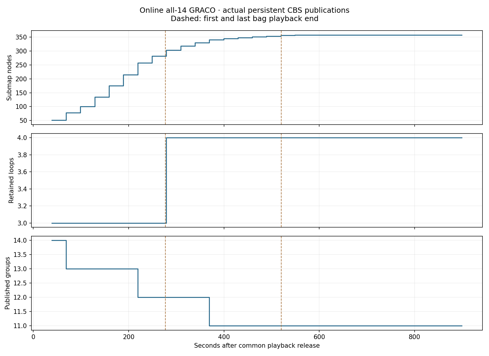
4-robot map PLY · 4,292,091 points
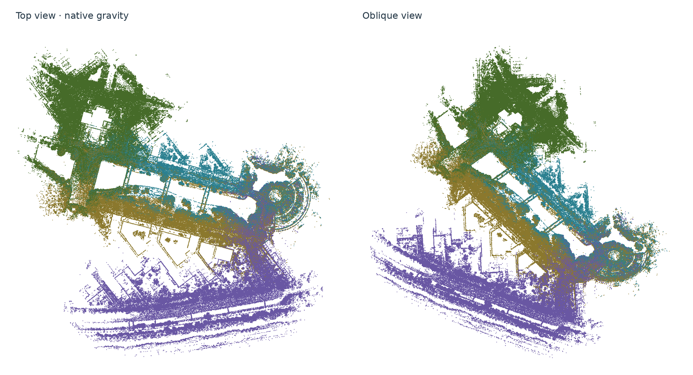
1-robot map PLY · 1,158,494 points
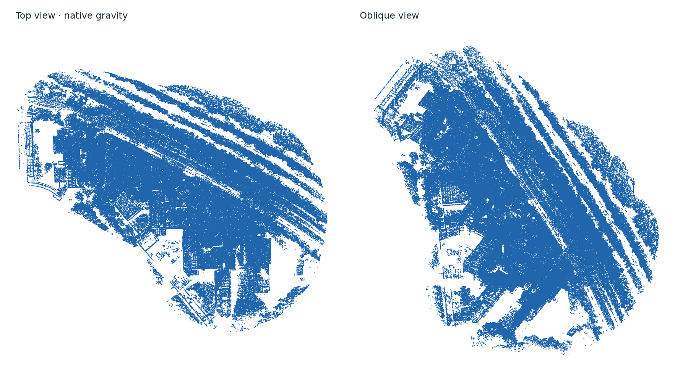
1-robot map PLY · 524,253 points
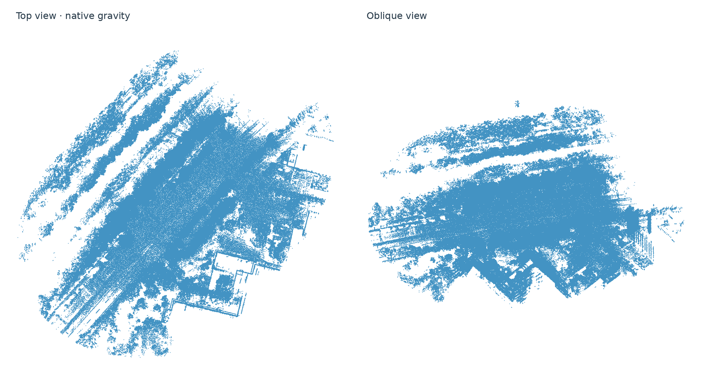
1-robot map PLY · 1,098,677 points
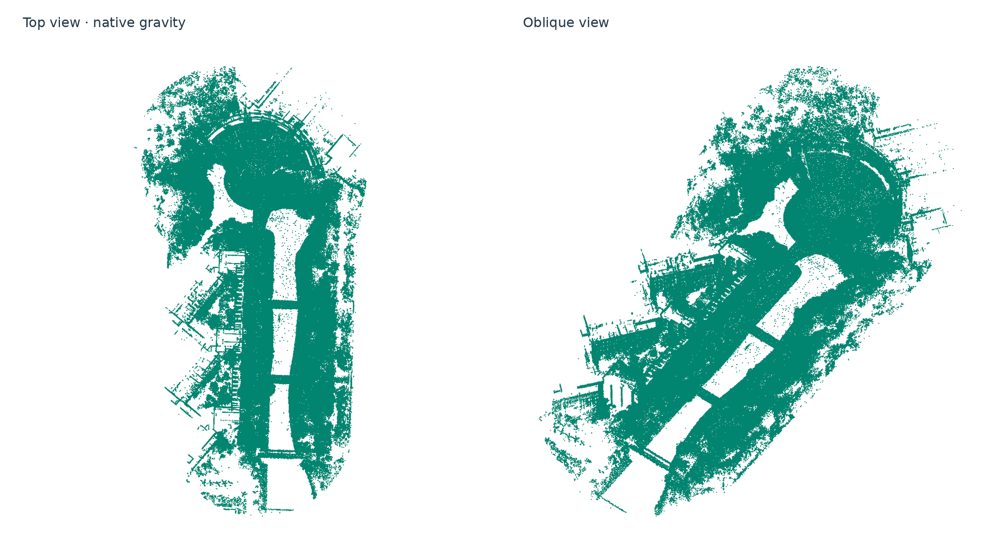
1-robot map PLY · 611,609 points
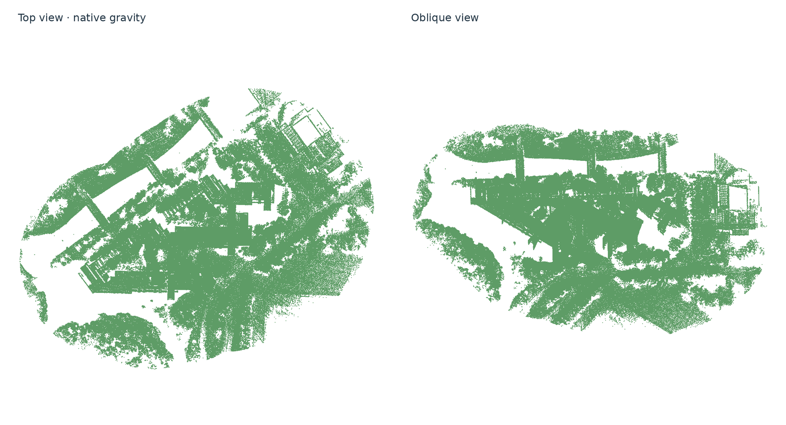
1-robot map PLY · 885,845 points
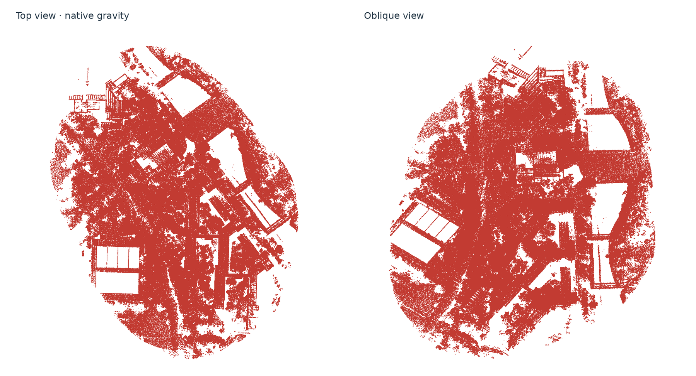
1-robot map PLY · 688,551 points
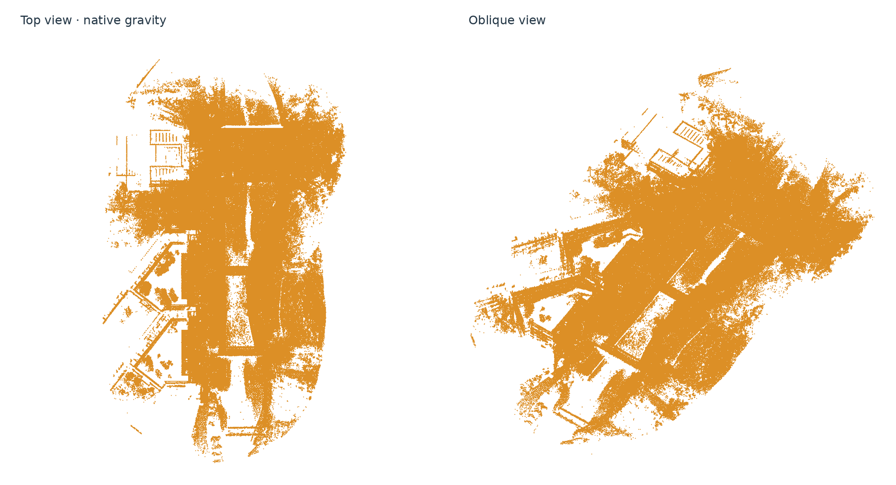
1-robot map PLY · 828,095 points
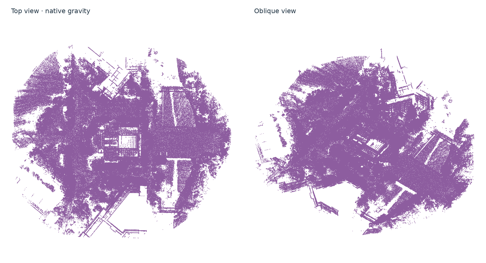
1-robot map PLY · 760,817 points
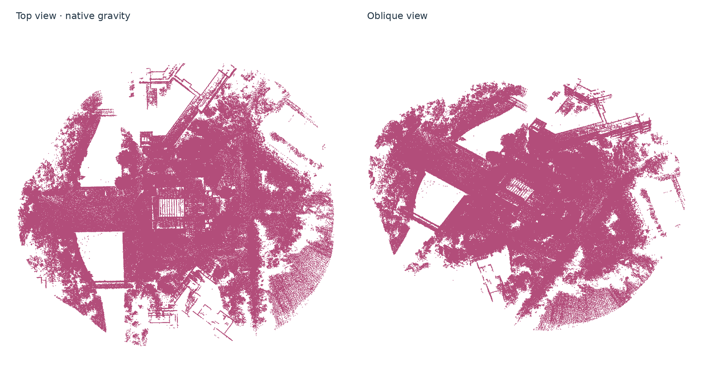
1-robot map PLY · 1,245,842 points
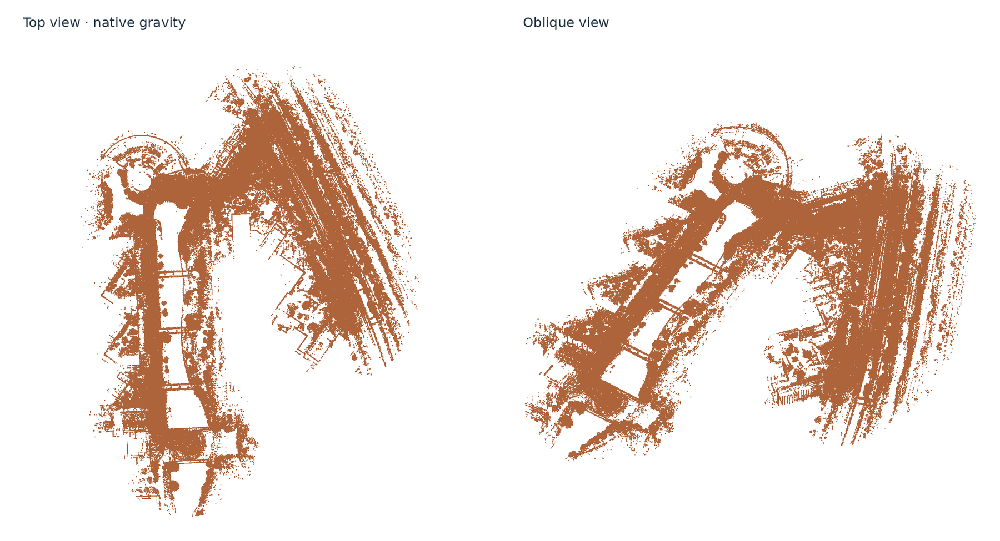
1-robot map PLY · 1,217,517 points
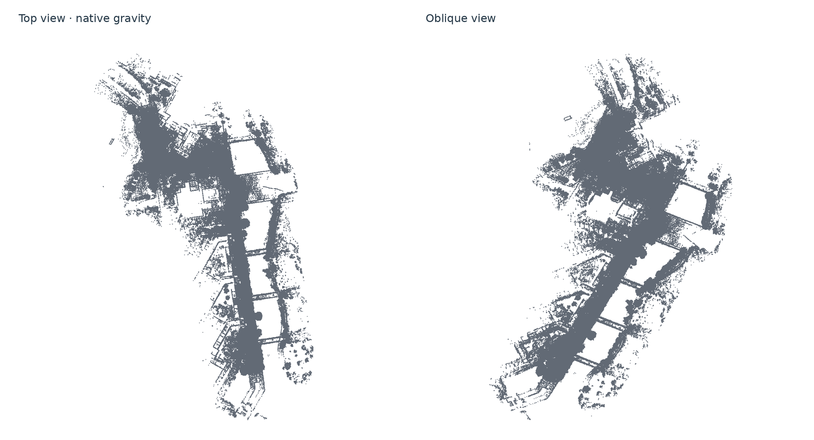
| Robot | Circles | Raw ATE (m) | CBS individual ATE (m) | Largest update gap (s) | Component |
|---|---|---|---|---|---|
| aerial01 | 30 | 0.189 | 0.189 | 0.212 | aerial01 |
| aerial02 | 15 | 0.059 | 0.059 | 0.192 | aerial02 |
| aerial03 | 23 | 0.063 | 0.063 | 0.184 | aerial03 |
| aerial04 | 23 | 0.114 | 0.114 | 0.200 | aerial04 |
| aerial05 | 27 | 0.201 | 0.201 | 0.192 | aerial05 |
| aerial06 | 17 | 0.065 | 0.065 | 0.126 | aerial06 |
| aerial07 | 24 | 0.080 | 0.080 | 0.178 | aerial07 |
| aerial08 | 21 | 0.122 | 0.122 | 0.177 | aerial08 |
| ground01 | 20 | 0.295 | 0.295 | 0.200 | ground01 |
| ground02 | 32 | 0.652 | 0.652 | 0.144 | ground01 |
| ground03 | 25 | 0.602 | 0.602 | 0.176 | ground01 |
| ground04 | 26 | 0.511 | 0.511 | 0.179 | ground01 |
| ground05 | 45 | 0.462 | 0.462 | 0.179 | ground05 |
| ground06 | 30 | 0.442 | 0.442 | 0.212 | ground06 |
Geometry is frozen at circle creation using only map observations then available. Circle footprints remain fixed. Later points inside an existing footprint are retained for final visualization but do not revise its retrieval or registration evidence. The input is a growing union of live native 80 m area exports, not every original scan. The earlier staged result instead filled circle geometry at capture end; accuracy differences therefore include this policy change. Published evidence contains 34.7% of the final retained point IDs. The 99% footprint coverage target therefore must not be read as 99% coverage by frozen evidence.
Retrieval diagnosis: 197 of 358 circles lacked terrain support; 197 had no layered ORB features. The preserved legacy multilayer configuration has no full-height retrieval fallback. Only 5 candidates reached 3D verification, with 4 accepted. These measurements identify missing/weak creation-time evidence as a likely contributor, not a controlled proof of causality. A follow-up should separate permanent footprint placement from geometry maturation or versioned evidence publication, and test a full-height fallback as a separate control. No thresholds were tuned in this experiment.
Measured application traffic: 128.32 MB total (9.17 MB per robot): retrieval/verification 127.06, PCM 0.08, registration geometry 1.15, CBS 0.03 MB. Actual remote serialized application traffic; peer retrieval fan-out, PCM, geometry exchange, CBS requests and responses. Excludes DDS/IP/discovery, local sensor transport, visualization and downloads. These bytes do not establish a matched win against three-robot baseline runs. Low traffic with few loops and disconnected robots is not an equivalent mapping outcome to the successful staged run.
Measured end-to-end wall time 902.3 s; peak simultaneous process-tree RSS 35.99 GiB. Shared pages may be counted more than once. Whole-device GPU peak: 1003.0 MiB. No host resource quotas. Native callbacks use four threads, numerical libraries one thread per process.
Every published payload was checked against an independent reconstruction of its creation-time observation prefix. Descriptor/evidence hashes, immutable graph prefixes, both-endpoint loop receipt before graph admission, finite chronological odometry, successful-update gaps, final registration support and published loop-transform consistency passed. No frozen graph replay or centralized solve was used to produce this result.
PLY files contain every unique retained native representative once per robot, re-posed by the nearest optimized circle. Uncovered points are retained and flagged. Components are exported separately; native IMU gravity sets their display orientation. GT is used only for trajectory evaluation. Per-robot live Rerun recordings and all bulk inputs remain on 148.
Creation-time BEV gallery · Causality and health audit · Accuracy · Report